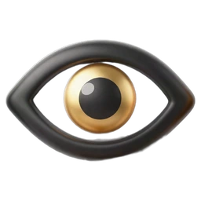
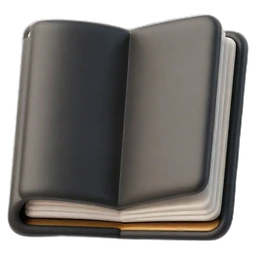
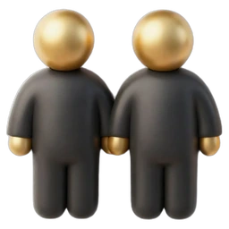
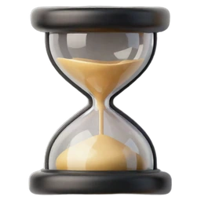
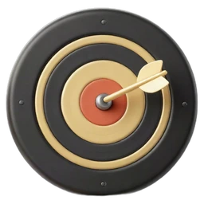
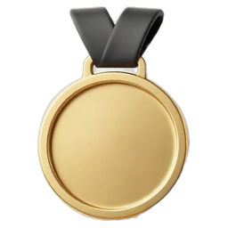
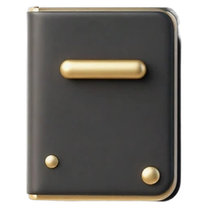
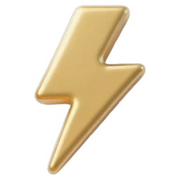
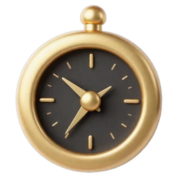

The extension does what the Mac app cannot see
The app decides every rule. The extension is its eyes and hands inside a page: it sees which site and which part of it you are on, counts the time, and acts in the tab. Click the toolbar button in the browser below, or jump to any screen.
The pages behind the popup are gray stand-ins, not any real site's design. Countdowns run live.
The whole extension at a glance
What only the extension can do
| The app cannot | So the extension | State |
|---|
What we took from ScreenZen, HaramBlur and the Hisn extension
ScreenZen and HaramBlur are read from their own sites and HaramBlur’s public code page. The ScreenZen browser extension’s store page would not open in my browser, so its row lists what the product does, not its popup layout. The Hisn extension is this repo’s own.
| From | What it does well | Our version | State |
|---|
What stays true on every screen
Adult protection leads
- The Shield's state is the first thing in the popup, before any time or rule.
- An adult block is never softened. No extra minutes, no way through from the browser.
- It works alone. Without the Mac app the adult layers still run.
One place per thing
- Rules are made in the app. The popup can add a stricter rule for this site, and hands the rest to the app.
- The browser can tighten, never loosen. Removing or weakening a rule is done in the app, under its strictness.
- Settings here are only about this browser. Lists and checks show where they are edited.
Private by construction
- Only an address is asked about, and only for hosts the app listed.
- Time is reported for listed hosts only. Ordinary browsing never leaves the browser.
- No page text, title or history crosses to the app. No account, no server.
The system
Night gold
The one look for the popup, the pages and the settings: warm near-black, cards drawn by a single line, and gold as the only signal colour. It is the same night look as the phone app.
Signals
Gold means on, chosen or yours. Green appears only in the status line when adult content is blocked. Amber appears only when something needs you. Red is never used: a block is calm, not an alarm.
Type
Serif for the one sentence a page is about and for your own words. The rounded system face for everything you read or press. No font file ships; both come from the Mac.
Shapes
Rounded squares, never pills: buttons, switches, status and counts. The gold button is always the safe choice and always first. Cards have a line and no shadow; only the popup itself casts one.
Objects









Unrot’s own black and gold objects, one per meaning, on a dark tile. No emoji and no line icons anywhere in the extension.
What I need from you
- Six ideas are proposals. They are marked Proposed and are not built: the new popup, quick rules from the popup, the time pill, calm pages, gray for one site, and the new settings. Tell me which to build.
- Quick rules from the popup change one thing in the system. Today the browser can only read rules. Adding a rule from the popup means letting the browser add stricter rules, never weaker ones. I recommend it; it is your decision.
- Your places is a proposal too. On a closed page the gold button goes to a place you chose, with up to three places set in the browser settings. It is drawn on the adult, closed and limit pages and is not built.
- The name. The extension is published as "Hisn Protection". This concept shows it as Unrot for the Unrot edition.